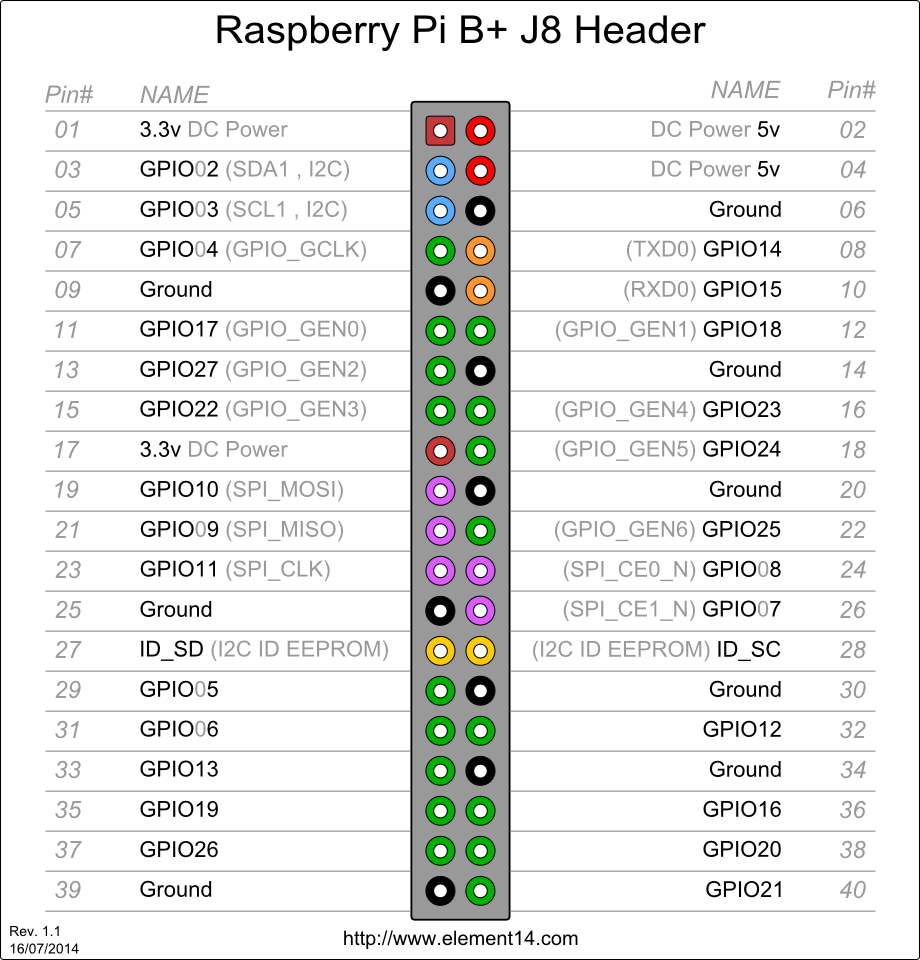
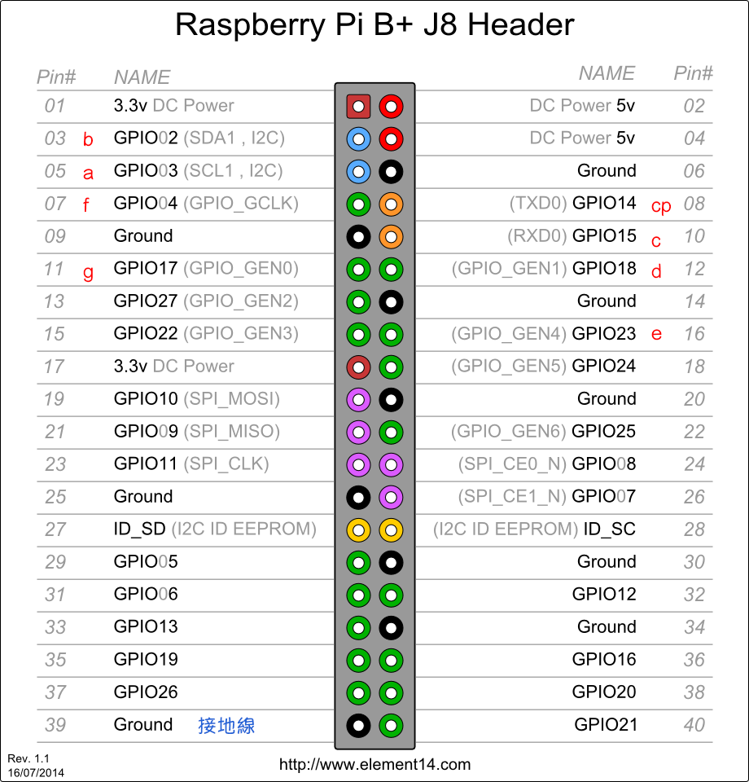
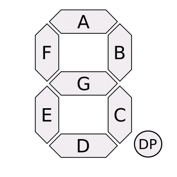

今天大刀老師突然說想起來下禮拜是期中考，
就靈機一動 認真的說下週要考七段顯示器，
如果是本身就是工科的大大們來說應該只是 a piese of cake
但是不才我上上週才剛學一下(根本已經忘光光)
這實在是用時間逼你學好啊～～
廢話不多說來說一下怎麼做
順便抄個小筆記哈哈
GPIO
不能大於3.3V
不能超過16mA
總和不能超過50mA
動手手
概念說一下～
要讓顯示器可以從0到9輪著播放
當然中間要休息一下（但也不是泡個茶喝個茶那麼久）
先看一下GPIO的圖長怎樣
免得亂插線爆炸

再來我們要看的是七段顯示器的圖

作法
程式怎麼code
Step1：在最底層建立一個open.ssh
Step2：在vi模式下，編輯open.ssh檔案
開頭一定要是 #!/bin/bash 這個，不然不能執行喔！！！
記得要 :wq 離開喔！！！
Step3：給予權限
1 2
| $ ls -al //可以看到目前資料夾下所有檔案的屬性權限 $ chmod a+x open.ssh
|
Step4：執行
程式碼：單一條
這邊要注意的是顯示器插上去的線跟gpio的位置要互相呼應
才不會亮錯燈
1 2 3 4 5
| $ cd /sys/class/gpio //先切換到那個資料夾下面 $ echo 14 > export //指定gpio 14，這時候料夾內就會增加一個gpio14 $ cd gpio14 $ echo out > direction //給予權限，如果這邊不這麼做的話會出現[Error]permission denied $ echo 1 > value // 1->通電（亮燈） 2->不通電（關燈）
|
程式碼：一個數字
目的：讓七段顯示器跑出數字1
這邊的話跟大家說一下我的插法
我習慣全部都在最後面
接地線是最上面的那條
看圖比較清楚


這樣應該比較清楚
open.ssh
1 2 3 4 5 6 7 8 9 10 11 12 13
| #!/bin/bash list=(2 18) for var in ${list[*]} do if [ -e /sys/class/gpio/gpio$var ] then echo “exist” else echo $var > /sys/class/gpio/export fi echo out > /sys/class/gpio/gpio$var/direction echo 1 > /sys/class/gpio/gpio$var/value done
|
程式碼：關燈整組數字
CloseAll.ssh
1 2 3 4 5 6 7 8 9 10 11 12 13
| #!/bin/bash close=(2 3 4 14 15 17 18) for var in ${close[*]} do if [ -e /sys/class/gpio/gpio$var ] then echo “exist” else echo $var > /sys/class/gpio/export fi echo out > /sys/class/gpio/gpio$var/direction echo 0 > /sys/class/gpio/gpio$var/value done
|
程式碼：整組數字(二維陣列）
求新求變嗎？總不能一直複製貼上
嘗試用二維陣列寫寫看
OpenArray.ssh
1 2 3 4 5 6 7 8 9 10 11 12 13 14 15 16 17 18 19 20 21 22 23 24 25 26 27 28 29 30
| #!/bin/bash open0=(2 4 23 18 15 3) open1=(2 15) open2=(3 2 17 23 18) open3=(3 2 17 15 18) open4=(4 17 2 15) open5=(3 4 17 15 18) open6=(3 4 23 18 15 17) open7=(2 3 4 15) open8=(2 3 4 15 17 18 23) open9=(2 3 4 15 17) for((i=0;i<=9;i++)) do eval array=\${open${i}[@]} for var in ${array} do if [ -e /sys/class/gpio/gpio$var] then echo “exist” else echo $var > /sys/class/gpio/export fi echo out > /sys/class/gpio/gpio$var/direction echo 1 > /sys/class/gpio/gpio$var/value done sleep 1 ./CloseAll.ssh done
|